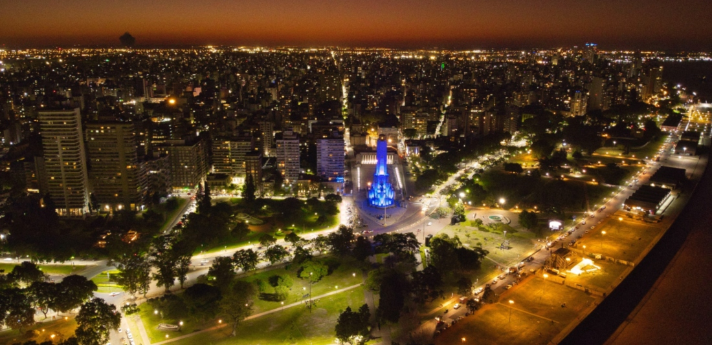
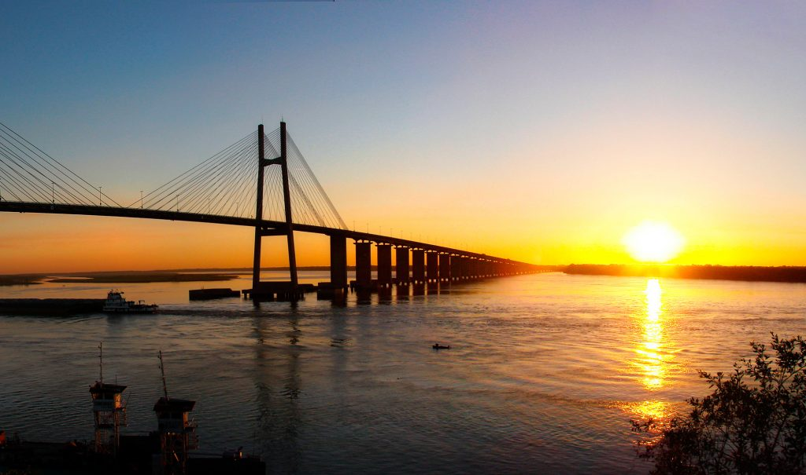

We will accompany you to discover the cultural variety in Rosario Argentina

Rosario is a cosmopolitan city located in the province of Santa Fe, Argentina. Known as the birthplace of the flag has a historical cultural heritage. The National Flag Memorial (Monumento Nacional a la Bandera) is one of the heritage stands as a symbol of the city to remember the creation of the Argentina flag. However, one of the principal attractions in Rosario, Argentina is the waterfront in front of the Paraná River (la Costanera) then here you will be able to find many water attractions to enjoy in the different seasons of the year.